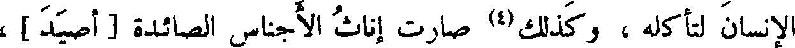
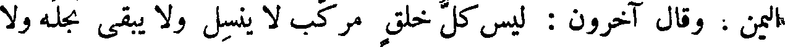
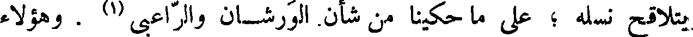
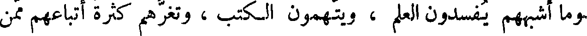
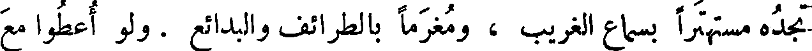
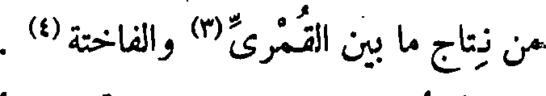
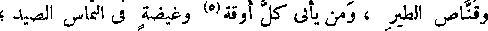
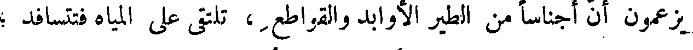
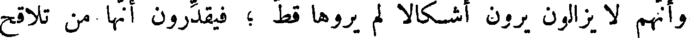

File: 000990.gt.txt (if the image is defective, simply delete all Arabic text and the line will be excluded)
رغوث (3) .
File: 000991.gt.txt (if the image is defective, simply delete all Arabic text and the line will be excluded)
ولشدة نهم الإناث ، صارت اللبؤة أشد عراما وأنزق ، إذا طلبت
File: 000992.gt.txt (if the image is defective, simply delete all Arabic text and the line will be excluded)

الإنسان لتأكله ، وكذلك (4) صارت إناث الأجناس الصائدة [ أصيد ] ،
File: 000993.gt.txt (if the image is defective, simply delete all Arabic text and the line will be excluded)
من النتاج الذى ركبوا ؛ وزعموا أن ذلك مشهور فى بلاد الحبشة ؛ وأقاصى
File: 000994.gt.txt (if the image is defective, simply delete all Arabic text and the line will be excluded)

اليمن . وقال آخرون : ليس كل خلق مركب لا ينسل ولا يبقى نجله ولا
File: 000995.gt.txt (if the image is defective, simply delete all Arabic text and the line will be excluded)

يتلاقح نسله ؛ على ما حكينا من شأن. الورشان والراعبى (1) . وهؤلاء
File: 000996.gt.txt (if the image is defective, simply delete all Arabic text and the line will be excluded)

وما أشبههم يفسدون العلم ، ويتهمون الكتب ، وتغرهم كثرة أتباعهم ممن
File: 000997.gt.txt (if the image is defective, simply delete all Arabic text and the line will be excluded)

تجده مستهترا بسماع الغريب ، ومغرما بالطرائف والبدائع . ولو أعطوا مع
File: 000998.gt.txt (if the image is defective, simply delete all Arabic text and the line will be excluded)
هذا الاستهتار (2) نصيبا من التثبت ، وحظا من التوقى ؛ لسلمت الكتب
File: 000999.gt.txt (if the image is defective, simply delete all Arabic text and the line will be excluded)
( النتاج المركب فى الطيور )
File: 001000.gt.txt (if the image is defective, simply delete all Arabic text and the line will be excluded)
من كثير من الفساد .
File: 001001.gt.txt (if the image is defective, simply delete all Arabic text and the line will be excluded)
وأنا رأيت طائرا له صوت غير حسن ؛ فقال لي صاحب الطيور : إنه
File: 001002.gt.txt (if the image is defective, simply delete all Arabic text and the line will be excluded)

من نتاج ما بين القمرى(3) والفاختة(4) .
File: 001003.gt.txt (if the image is defective, simply delete all Arabic text and the line will be excluded)

وقناص الطير ، ومن يأىي كل أوقة(5) وغيضة فى التماس الصيد ؛
File: 001004.gt.txt (if the image is defective, simply delete all Arabic text and the line will be excluded)

يزعمون أن أجناسا من الطير الأوابد والقواطع ، تلتقي على المياه فتتسافد ؛
File: 001005.gt.txt (if the image is defective, simply delete all Arabic text and the line will be excluded)

وأنهم لا يزالون يرون أشكالا لم يروها قط ؛ فيقدرون أنها من تلاقح
File: 001006.gt.txt (if the image is defective, simply delete all Arabic text and the line will be excluded)
تلك المختلفة .
To Save: `Ctrl+s`, make sure to choose `Webpage, complete`!